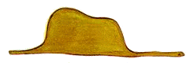
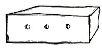
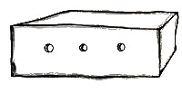
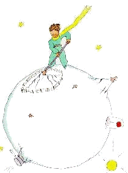
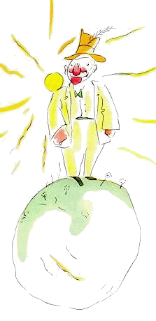
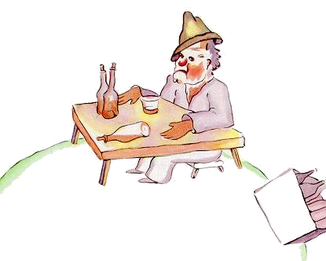

Mystical and enchanting, <The Little Prince(1943)> has fascinated both children and adults for decades. In this book, a pilot is stranded in the midst of the Sahara desert where he meets a tiny little prince from another world traveling the universe in order to understand life. At the end of this book, the little prince discovers the true meaning of life.
1. English Book: The Little Prince (1943)
2. Chinese
Book: 小王子中文版
3. Chinese/English：小王子中英对照版
Chapter 1
-
Outline: We are introduced to the narrator, a pilot, and his ideas about grown-ups.
+ The story of the painting: take two drawings about the boa-constrictor. Grown-ups advise him to learn geography, history, arithmetic instead of painting.
- 1. The Boa-constrictor

- 2. Drawing-1: boas-outside 
- 3. Drawing-2: boas-inside

Chapter 2
-
Outline: the narrator crashed in the desert and makes the acquaintance of the little prince.
+ The experience in Sahara-Desert: accident(strand in the midst of desert) -> meet the little prince -> draw the boa drawing -> draw a sheep -> make the acquaintance of the little prince.
 =>
=>  => => 
=> => 
Chapter 3
-
Outline: the narrator learns more about from where the little prince came.
+ To learn where the little prince came from! (comes from another planet.)
+ To learn why he doesn't need a string to tie the shee ! (Because where I live, everything is so small.)
Chapter 4
-
Outline: the narrator speculates as to which asteroid from which the little prince came.
+ Conclusion: the planet that little prince came from was scarcely any larger than a house (Asteroid B-612)!
+ Think: the difference of grown-ups and children. It is same as [compare the lifes(生命) vs. figures(数字)]. For adults: they are no longer interested in anything but figures because of the existence of forgetting!
+ In order to keeping the life (never forget), I determine to draw this story like the fairy-tales.
But I don't know how to see sheep through the walls of boxes, perhaps I am a little like the grown-ups, I have forgotten it. Everyone has had to grow old!
Chapter 5
-
Outline: We are warned as to the dangers of the baobabs.
+ There are good plants and bad plants on the asteroid planet. One must destroy the bad plants as soon as possible (the first instant that one recognizes it)!
+ Why are the bad plants(baobabs) so danger?
Because if you attend to it too late, you will never be able to get rid of it. And if the planet is too small, and the baobabs are too many, they will split it in pieces. That's really a catastrophe!=>
Chapter 6
-
Outline: the little prince and the narrator talk about sunsets.
+ The only entertainment of the little prince is looking at the sunset!
One day, the little prince saw the sunset forty-four times (because the planet where he lives is so small)! And a little later he added:"You know -- one loves the sunset, when one is so sad.(当一个人情绪低落的时候，他会格外喜欢看日落)"+ 由此得知：小王子也有自己的烦恼。
Chapter 7
-
Outline: the narrator learns about the secret of the little prince's life.
+ Confusion of the little prince: a sheep if it eats little bushes, it will eat flowers, too! So, what use are the flower's thorns?And if the sheep eats the flower, in one moment all his stars will be darkened!
+ 小王子认为：大人们口中的所谓的重要的事情(matter of consequence)总是那么地奇怪。难道美的事物的消失不比那些无聊的事甚至是丑陋的事物更加重要吗？
Chapter 8
-
Outline: the rose arrives at the little prince's planet.
+ One day, a new kind of "baobab"(rose) appeared at the asteroid. Some sort of miraculous apparitions emerge from it. It owns mysterious adornment. The little prince could not restrain his admiration to it.
+ But, the rose very quickly to torment the prince with her vanity (玫瑰的虚荣很快就就开始折磨着小王子). The rose said: "I have a horror of drafts. I suppose you wouldn't have screen for me."
玫瑰花觉得小王子照顾它是理所当然的事情，她的自负和幼稚没能让小王子明白她对他的爱，反而使得小王子很生气！于是小王子就生气的离开了。+ "I ought to have judged by deeds and not by words! She cast her fragrance and her radiance over me. I ought never to have run away from her! "(小王子离开了它之后，走了许多个星球此时的他才渐渐明白了这种爱)。
+ 思考：生活中很多人亦是如此，我们不会表达我们的爱，有的时候我们说的话反而会伤害到彼此，但是请你记住：“Judge by deeds and not by words”!
Chapter 9
-
Outline: the little prince leaves his planet.
+ 小王子决定离开星球去找寻自己对于爱和成长的理解。他向rose告别，两者都互相明白自己爱着对方，但是表达的方式不对，最后小王子还是带着不舍离开了。
Chapter 10
-
Outline: the little prince visits the king(国王).
+ The little prince visits the neighborhood asteroids in order to add to his knowledge. The first of them was inhabited by a king. For the king, all other objects are his subjects(臣民).
Although no one else lives in there, the king insists upon that his authority should be respected. And the king tolerated no disobedience.+ The king thinks he rules over everything. But he observes that "one must require from each one the duty which each one can perform!"
+ 其实这个国王什么也管不了，但是他却始终认为自己掌管着一切，他甚至用他的那些虚职想要留住小王子，但是小王子觉得无趣又无聊，就又离开了，继续他的旅程。+ 从这个行星小王子学习到的第一个知识就是：“The grown-ups are very strange!”
Chapter 11
-
Outline: the little prince visits the conceited man(自大狂).
+ The second plant was inhabited by a conceited man. Just like the king, for conceited man, all other men are his admirers(崇拜者).
For conceited man, the 'admire' means that you regard me as the handsomest, the best-dressed, the richest, and the most intelligent man on this planet. (从这可以看出他确实很自大)+ 从这个行星小王子再次学习到并确认：“The grown-ups are certainly very odd!”
Chapter 12
-
Outline: the little prince visits the tippler(酒鬼).
+ The third planet was inhabited by a tippler. He is always drinking in order to forget the ashamed of his drinking. It is so ridiculous!
+ 从这个行星小王子再次确认：“The grown-ups are certainly very, very odd!”，并且 “it plunged the little prince into deep dejection.”
Chapter 13
-
Outline: the little prince visits the businessman(商人).
+ The fourth planet was inhabited by a businessman. He is always concerned with "matters of consequence". During the past 54 years, he has been disturbed only three times!
+ 商人说自己拥有这天上成千上万的星星，并且不停的为它们命名并将它们存在自己的银行里。但是这件事在小王子看来，简直难以理解，他理解不了他这样做到底有什么意义，他所谓的重要的事到底有什么重要的地方。
+ “The grown-ups are certainly altogether extraordinary!” the little prince thought.
Chapter 14
-
Outline: the little prince visits the lamplighter(灯夫).
+ The fifth planet was very strange, it's the smallest of all! A day in here lasts only one minute.
+ 这个点灯人每天的工作就是白天关灯晚上开灯，但是因为这个星球太小，一天实际上只有一分钟时间，所以他每分钟都需要去开一次灯关一次灯。所以这个点灯人因为没时间休息而抱怨自己unlucky。
+ 但是，小王子第一次看到了一个不同的 grown-up，这个人与之前所有的 grown-ups 不同，because he is thinking of something else besides himself!
而且小王子最终离开这个星球，也不是因为无聊而是因为这个星球太小了，容不下两个人！并且小王子最终离开时甚至为自己不能够看到这个星球每天那1440次日落而感到遗憾！
Chapter 15
-
Outline: the little prince visits the geographer(地理学者).
+ The sixth planet was inhabited by an old gentleman(geographer 学者). He is knowledgeable, and has written voluminous books.
He does not leave his desk, but receives the explores in his study!He lets the little prince describe his planet. And he tells the prince:"We do not record things if they are ephemeral(短暂的,稍纵即逝的)".+ 小王子第一次意识到了这个世界上很多美好的事情往往都是稍纵即逝的东西，他的花也是(in danger of speedy disappearance, it's ephemeral)，他有点后悔离开它的花了，但是为了更好的理解这个世界，更好的理解爱，他向 geographer 征求建议，他想要再看一个最值得看的地方！于是他来到了地球(the Earth)！
+ 从这个故事中我们应该体悟到：我们一定要学会珍惜自己所珍爱的事情。
Chapter 16
-
Outline: the narrator discusses the Earth's lamplighters.
+ So then the seventh planet was the Earth!
The Earth is not an ordinary planet! There are 111kings, 7000geographers, 900,000businessman, 7,500,000tipplers and 311,000,000conceited-men, about 2,000,000,000 grown-ups!+ It's so big, from south to north, from east to west. Seen from a slight distance, that would make a splendid spectacle!
为了说明地球相对于那些小行星之大，这里举出了太阳光扫过地球一周地球上所经历的壮观景象。
★ 小王子的旅途：
-
- 1. Own Planet 
=> - 2. The King
=> - 3. The Conceited Man 
=> - 4. The Tippler 
- 5. The Business Man
=> - 6. The Lamplighter

=> - 7. The Geographer
=> - 8. The Earth

Chapter 17
-
Outline: the little prince makes the acquaintance of the snake.
+ When one wishes to play the wit, he sometimes wanders a little from the truth! (想卖弄机智的人，有时会少许的偏离真理！)
+ When the little prince arrived on the Earth, he was very much surprised not to see any people. And then he saw the snake, and conversed&&acquainted with it.
+ The little prince said:"I have been having some trouble with a flower". The snake said:"I can carry you farther than any ship could take you".
Chapter 18
-
Outline: the little prince goes looking for men and meets a flower.
+ He meets one flower and asks it:"Where are the men?". The flower says that:"They have no roots and no one knows where to find them".
Chapter 19
-
Outline: the little prince climbs a mountain range.
+ The little prince climbed a high mountain! He talks with the rocks, and the rocks only simply repeat his words. So the little prince thinks: "What a queer planet!" and he misses his own planet more and more.
Chapter 20
-
Outline: the little prince discovers a garden of roses.
+ He talked with roses. 小王子发现原来他自以为所拥有的花是一朵独一无二的花，没想到他所拥有的只是一朵很普通的花，他觉得他所拥有的一切不会使自己成为一个了不起的王子，于是他躺在草丛中哭泣起来。
Chapter 21
-
Outline: the little prince befriends the fox.
+ What is the "tamed"?
It means to establish ties! If you tamed me, then we shall need each other. To me, you will be unique in all the world, and to you, I shall be unique in all the world.+ What is a "rite"?
Those are actions too often neglected, they are what make one day different from other days, one hour from other hours. These is a rite!+ What is the "secret" of love?
It is only with the heart that one can see rightly, what is essential is invisible to the eye! (只有用心才能看得真切，真正实质性的东西，用眼睛是看不见的)。
Chapter 22
-
Outline: the little prince encounters a railway switchman.
+ He saw the express train rushed by with a roar like thunder, he considered that "were they not satisfied where they were?".
And He concluded that "only the children knows what they are looking for!"
Chapter 23
-
Outline: the little prince encounters a merchant.
+ The merchant sold pills, it can quench thirst. So you can save a tremendous amount of time. But, for little prince, that's so ridiculous.
Chapter 24
-
Outline: the narrator and the little prince, thirsty, hunt for a well in the desert.
+ 视线转到讲述者(这个在沙漠里出了事的飞行员)。
小王子在不停的跟他讲述自己的所见所闻所感。知道飞行员水喝完了，他们开始准备在沙漠里寻找水源，渐渐的飞行员也明白了一个道理：
"What makes the desert beautiful is that somewhere it hides a well. Sometimes, the other things give them their beauty is something that is invisible!"
Chapter 25
-
Outline: finding a well, the narrator and the little prince discuss his return to his planet.
+ They finally find a well in this desert.
他们终于喝到了经过不懈努力所找到的水，喝完水后两人谈起了话，小王子让飞行员帮他画 muzzle，飞行员也敏锐的感觉到小王子这是想要跟自己告别了，他之所以出现在这个沙漠里，正是因为他在找自己刚来到地球时的地方，准备返回自己的星球。
Chapter 26
-
Outline: the little prince converses with the snakes, consoles the narrator, returns to his planet.
+ At night you will look up at the stars. Where I live everything is so small that I cannot show you where my star is to be found. It is better, like that. My star will just be one of the stars, for you. And so you will love to watch all the stars in the heavens... They will all be your friends. And, besides, I am going to make you a present (the laughter).
+ There was nothing but a flash of yellow close to his ankle. He remained motionless for the instant. He did not cry out. He fell as gently as a tree falls. There was not even any sound, because of the sand. (小王子走了)
Chapter 27
-
Outline: the narrator's afterthoughts(讲述者的反思).
+ 在这之后的6年里，我没有向任何人提起过这段经历！从沙漠走出来之后，从此我就爱上了在夜间倾听着星星，好像是在倾听着五亿个铃铛。
+ 有一天，你们若去非洲沙漠旅行，请仔细认一认这个景色，免得当面错过了。你们若有机会经过那里，我恳求你们，不要匆匆离去，在这颗星下守候片刻。倘若有个孩子走到你们跟前，倘若他在笑，有一头金发，不回答别人的提问，你们就可猜到他是谁了。那时，劳驾你们！不要让我老是这么忧伤，赶快写信告诉我；他回来了……
总结：
+ 什么是"驯服"，抑或说什么是“爱”？
这是已经早就被人遗忘了的事情，它的意思就是‘建立联系’。狐狸说：“对我来说，你还只是一个小男孩，就像其他千万 个小男孩一样。我不需要你。你也同样用不着我。对你来说，我也不过是一只狐狸，和其他千万只狐狸一样。但是，如果你驯服了我，我们就互相不可缺少了。 对我来说，你就是世界上唯一的了；我对你来说，也是世界上唯一的了。”
+ 如何做到“驯服”？
驯服的过程应当有一定的仪式。仪式本身也是一种早已被人忘却了的事。狐狸说：“它就是使某一天与其他日子不同，使某一时刻与其他时刻不同。比如说，我的那些猎人就有一种仪式。他 们每星期四都和村子里的姑娘们跳舞。于是，星期四就是一个美好的日子！我可 以一直散步到葡萄园去。如果猎人们什么时候都跳舞，天天又全都一样，那么我也就没有假日了。”
+ 什么是“实质性的东西”？
只有用心才能看得清，实质性的东西，用眼睛是看不见的。正因为你为你的玫瑰花费了时间，这才使你的玫瑰变得如此重要。人们已经忘记了这个道理，可是，你不应该忘记它。你现在要对你驯服过的一切负责到底。你要对你的玫瑰负责……
+ 知乎的精辟解读：如何评价童话《小王子》？
http://www.zhihu.com/question/20517093+ 我们想找到重要的事情，为之付出时间。却忘了，一些普通的事情，正因为我们首先花费了时间，这件事才变得重要。同样，一个普通的人，也正因为我们花费了时间，这个人才对我们如此重要。
一 朵玫瑰花（一个女孩），重要吗？不重要。天底下有千千万万的玫瑰（女孩）。可一旦你为这朵玫瑰花（这个女孩）花费了时间，它（她）就变得重要了，成了你的 千千万万分之一，成了你的唯一。在你看来，它（她）跟其他的玫瑰花（女孩），是截然不同的。这就是重要。或者说，这就是爱。爱，就是花费了时间。+ 小王子驯服狐狸前，狐狸曾说：
“ 你看！你看到那边的麦田没有？我不吃面包，麦子对我来说，一点用也没有。我对麦田无动于衷。而这，真使人扫兴。但是，你有着金黄色的头发。那么，一旦你驯服了 我，这就会十分美妙。麦子，是金黄色的，它就会使我想起你。而且，我甚至会喜欢那风吹麦浪的声音。”
小王子离开狐狸的时候，狐狸哭了，小王子说：你什么好处也没得到。
可小狐狸说：“由于麦子颜色的缘故，我还是得到了好处。”
是啊，很多人很多事，走了，不在了，没有了。可是，我们还是能够缅怀和留念，所以我们还是得到了好处的。这好处，便是永恒不变的记忆。人会死，花会落，可记忆永远不会衰竭。有人在我们生命里曾重要过，即使他不在了，他对我们的影响却会永存。